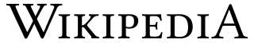
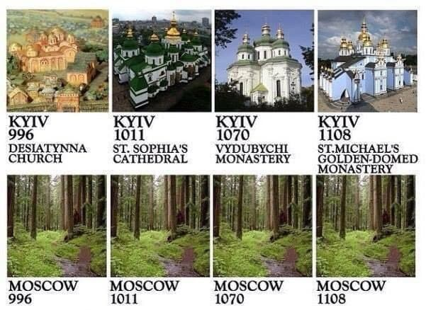

Ukraine Kyjiw
- Kyjiw wurde von Europäern gegründet
- Kyjiw beherrschte „russisches“ Gebiet, lange bevor Moskau existierte
- Kyjiw ist Ukraine

Kyjiw
Kyjiw war das historische Kulturzentrum der ostslawischen Zivilisation und die Wiege für die Christianisierung der Kyjiwer Rus. Das am Rand der Kyjiver Rus gelegene Fürstentum Wladimir-Susdal, in dessen Südwesten Moskau entstand, eigneten sich sich den Herrschaftstitel über die Kyjiwer Rus mit Gewalt an, die Führung der orthodoxe Kirche folgte, schließlich wurden Europäische Werte und Kultur durch mongolisch geprägte Gewaltherrschaft abgelöst, die seitdem versucht, das Europäische Kyjiv unter russische Kontrolle zu bekommen. Kyjiw ist nach wie vor das Zentrum der ostslawischen Zivilisation, während Moskau Europäische Werte und Kultur nur vortäuscht und pervertiert, siehe ?@sec-culture-russia und ?@sec-russia-values.

Kyjiw Rus
Es ist Kyjiw Rus, nicht Moskau Rus. Und „Rus“ bedeutet nicht Russland, sondern ist von einem altnordischen Begriff für „Männer, die rudern“ abgeleitet und hat somit ein nordeuropäisches, kein russisches oder mongolisches Erbe.
Die folgende Karte zeigt die Kyjiwer Rus mit ihren wichtigsten Regionen:
{kind=link}
Man beachte, dass die Region „Kleine Rus“ die Kernregion der Kyjiwer Rus ist, nicht der kleine Bruder von Russland. Das Fürstentum Wladimir-Susdal gehört nicht einmal zu den vier Kernregionen der Kyjiwer Rus, und wo später einmal Moskau auf der Karte erscheint ist: nichts.
.jpg){kind=link}
Wenn man wie Putin das Völkerrecht über Bord wirft und mit historischen Ansprüchen argumentiert, dann befindet sich Moskau im Hinterhof der Kyjiw Rus, deren Hauptstadt selbstverständlich Kyjiv ist.
Lviv Lüge
Um Kyjiw, das Zentrum der ostslawischen Zivilisation, für Russland zu beanspruchen, hat die russische Propaganda - namentlich der Historiker und Propagandist Tarik Cyril Amar - die folgende absurde Geschichte konstruiert (um uns über die Absurdität zu täuschen, nennt er sie akademisch hochtrabend „Paradoxon“ und versucht und uns mit 500 Seiten Unsinn aus russischen Archiven zu blenden):
- wenn es eine ukrainische Nation gibt, dann nur in der Westukraine, und ihre Hauptstadt ist Lemberg (die Kyjiwer Rus war viel größer als die Westukraine und ihre Hauptstadt ist natürlich Kyjiw)
- diese West-Ukrainische Nation (man beachte den Widerspruch) hat vor der Sowjetunion nicht existiert (absolut lächerlich, man muss nur durch das geschichtsträchtige Lviv (deutscher Name Lemberg) spazieren und sich die habsburgische Architektur, die alte armenische Kirche, die jüdische Kultur, etc. etc. ansehen)
- das dominierende Merkmal der Westukraine seien Bandera-Nazis (in Wirklichkeit waren es weniger als 3% für rechte Parteien, siehe ?@sec-nazis-ukraine)
Siehe auch ?@sec-ukraine-nation.
Kyjiwer Geschichte
Antike Anfänge
Die Ursprünge von Kyjiw, der Hauptstadt der modernen Ukraine, reichen bis in die Antike zurück. Archäologische Funde belegen Siedlungen, die bis in die späte Altsteinzeit (vor 40.000-15.000 Jahren) zurückreichen. Im 5. Jahrhundert n. Chr. siedelten sich slawische Stämme entlang des Dnjepr an und legten den Grundstein für ein Handelszentrum. Der Legende nach wurde Kyjiw von drei Brüdern - Kyi, Shchek und Khoryv - und ihrer Schwester Lybid gegründet.
Aufstieg der Kyiwer Rus
Kyjiv hatte eine strategische Lage am Handelsweg von der Ostsee zum Schwarzen Meer, dem Weg von den Warägern zu den Griechen. Mitte des 9. Jahrhunderts herrschten in ihr die warägischen Fürsten Askold und Dir, bevor sie von Ruriks Feldherrn Oleg von Nowgorod 882 getötet wurden. Dieser vereinigte den gesamten Herrschaftsbereich der Waräger (Rus) entlang des Handelsweges und machte Kyjiw zur fürstlichen Residenz der Rus. 988 initiierte der Großfürst Wladimir I. den Übertritt der bis dahin heidnischen Rus zum orthodoxen Christentum byzantinischer Prägung. Dieser Akt war durch eine Massentaufe der Kyjiwer Bevölkerung im Dnipro und den Sturz der alten Götzen in den Fluss gekennzeichnet. Unter Wladimirs Sohn Jaroslaw dem Weisen wurde Kyjiw stark ausgebaut. Neben zahlreichen neuen Kirchen und Klöstern wurde die erste ostslawische Bibliothek gegründet. Die aktive Heiratspolitik und der Ausbau der Stadt machten sie in ganz Europa bekannt. Damit erreichte Kyjiw im 11. und 12. Jahrhundert den Höhepunkt seine Entwicklung und wurde eine der größten Städte Europas.1
Niedergang der Kyjiwer Rus
Nach dem Tod Jaroslaws begannen Erbfolgekämpfe, die sich auf die Stadt negativ auswirkten und zu wiederholten Eroberungen und Zerstörungen führten. So wurde Kyjiw 1169 durch Fürst Andrei Bogoljubski von Wladimir-Susdal erobert. 2
Bogoljubski brannte Kyjiv nieder, hatte aber offensichtlich nicht die Macht, die riesige Kyjiv Rus selbst zu beherrschen. Stattdessen griff er zu einer Psy-Ops Maßnahme: er nahm er den bis dahin an Kyjiw gebundenen Großfürstentitel mit nach Norden in seine Residenz bei Wladimir und zersetzte so die Kyjiv Rus weiter. 1240 wurde Kyjiw im Zuge der mongolischen Invasion der Rus nach fast zehnwöchiger Belagerung von den Truppen Batu Khans erobert. Fast alle Einwohner wurden getötet und nahezu alle Gebäude niedergebrannt. Die Nachfolger von Bogoljubski unterwarfen sich der mongolischen Herrschaft. Nach einer erneuten Vernichtung Kyjivs verließ der orthodoxe Metropolit 1299 Kyjiw und zog nach Wladimir. Wladimir-Susdal fragmentierte, 1325 übersiedelte der orthodoxe Metropolit nach Moskau, 1331 übernahm der Prinz von Moskau den Großfürstentitel und 1389 ging der Fürstentitel von Wladimir-Susdal im Großfürstentitel von Moskau unter, und damit auch die Europäische Kultur:
The invasion of Batu Khan and subsequent domination of Rus’ lands by the Golden Horde was also a turning point in the history of Russian culture and statehood. Mongol rule imposed its principles of state on the northeastern Rus’ principalities, which were very different from those of Western Europe. In particular, Russia adopted a principle of universal subordination and undivided authority.3
Weitere Einzelheiten finden Sie unter ?@sec-ukraine-history und ?@sec-russia-moscow.
Wechselnde Mächte
Im 14. Jahrhundert fiel Kyjiw an das Großherzogtum Litauen, 1569 dann an die Polnisch-Litauische Gemeinschaft und wurde zu einem Zentrum des orthodoxen Widerstands gegen den katholischen Einfluss. Das 17. Jahrhundert brachte mit dem Kosakenaufstand unter der Führung von Bohdan Chmelnyzky, der 1649 triumphal in Kyjiw einzog, einen Umbruch.
Wiederaufstieg und Russifizierung
Nach dem 1648 begonnenen Chmelnyzkyj-Aufstand wurde Kyjiw Hauptstadt des Hetmanats der Saporoger Kosaken. Diese unterstellten sich 1654 im erzwungenen Abkommen von Perejaslaw dem Moskauer Zaren. Unter der Herrschaft des Kosakenhetmans Iwan Masepa wurden zahlreiche wichtige Bauwerke erneuert und Schulen gegründet. Das Kyjiwer Höhlenkloster, die Sophienkathedrale und das St. Michaelskloster erhielten ihr heutiges Aussehen im Stil des ukrainischen Barocks.
Unter Kaiserin Elisabeth wurden die barocke Andreaskirche und der Marienpalast erbaut. Einen Rückschlag erlitt die städtische Entwicklung beim Großbrand im Kyjiwer Stadtteil Podil im Jahre 1811. Kaiser Nikolaus I., der Kyjiw liebevoll Jerusalem der russischen Erde nannte, tat viel dafür, dass Kyjiw zu einem wichtigen Handels-, Verkehrs- und Industriezentrum des Russischen Reiches ausgebaut wurde. Unter anderem ließ er die St.-Wladimir-Universität gründen und initiierte den Bau der massiven Nikolaus-Kettenbrücke über den Dnipro. Im Jahr 1888 feierte die Stadt mit großem Pomp den 900. Jahrestag der Christianisierung der Rus. Diesem Jahrestag wurde die Errichtung der Wladimirkathedrale im byzantinischem Stil gewidmet.
Nach der Februarrevolution 1917 bildete sich in Kyjiw die Zentralna Rada, die am 25. Januar 1918 die Unabhängigkeit und Souveränität der Ukraine verkündete. Am 8. Februar 1918 eroberten die Bolschewiki die Stadt, die aber schon am 3. März 1918 im Rahmen der Operation Faustschlag von deutschen Truppen besetzt wurde.
Sowjetzeit
Ab 1920 war Kyjiw sowjetisch. Am 19. Januar 1934 wurde die Stadt an Stelle von Charkow zur Hauptstadt der Ukrainischen Sozialistischen Sowjetrepublik (SSR). Im Verlauf der 1930er Jahre wurden in Kyjiw viele historische Bauten von den sowjetischen Behörden vernichtet. In Bykiwnja, einem Waldgebiet im Osten der Stadt, wurden während des Stalinismus etwa 130.000 Menschen ermordet. Während der deutschen Okkupation im Deutsch-Sowjetischen Krieg, vom 19. September 1941 bis zum 6. November 1943, wurden von den Besatzern 120.000 bis 160.000 sowjetische Kriegsgefangene und Zivilisten (vor allem Juden) in Kyjiw ermordet. Mehr als 33.000 Juden fielen allein dem Massaker von Babyn Jar bei Kyjiw am 29. und 30. September 1941 zum Opfer. Großen Schaden nahm die Stadt kurz nach der Schlacht um Kyjiw durch einen verheerenden Großbrand, der am 24. September 1941 durch ferngezündete sowjetische Sprengsätze ausgelöst wurde.
Unabhängigkeit
Der Zusammenbruch der Sowjetunion im Jahr 1991 bedeutete die Wiedergeburt Kyjiws als Hauptstadt einer unabhängigen Ukraine und festigte seinen Status als europäische Großstadt. Nach der Unabhängigkeit wurden zahlreiche während der Periode des Stalinismus zerstörter Bauwerke wiedererichtet, zum Beispiel das Michaelskloster und die Christi-Geburt-Kirche im Stadtteil Podil.
Nach Orangener Revolution und Euro_Maidan ist Kyjiw ein Symbol für die Widerstandsfähigkeit der Stadt und der ganzen Ukraine, die Herausforderungen wie die russische Invasion im Jahr 2022 gemeistert und gleichzeitig ihr reiches historisches Erbe bewahrt hat.
Kyjiw Höhepunkte
?var:todo
Footnotes
Kyjiv - Mittelalterliche Blütezeit (2025 March 29) German Wikipedia. https://de.wikipedia.org/wiki/Kiew#Mittelalterliche_Bl%C3%BCtezeit↩︎
Kyjiv - Niedergang (2025 March 29) German Wikipedia. https://de.wikipedia.org/wiki/Kiew#Niedergang↩︎
Vladimir-Suzdal (2025 March 29) English Wikipedia. https://en.wikipedia.org/wiki/Vladimir-Suzdal↩︎